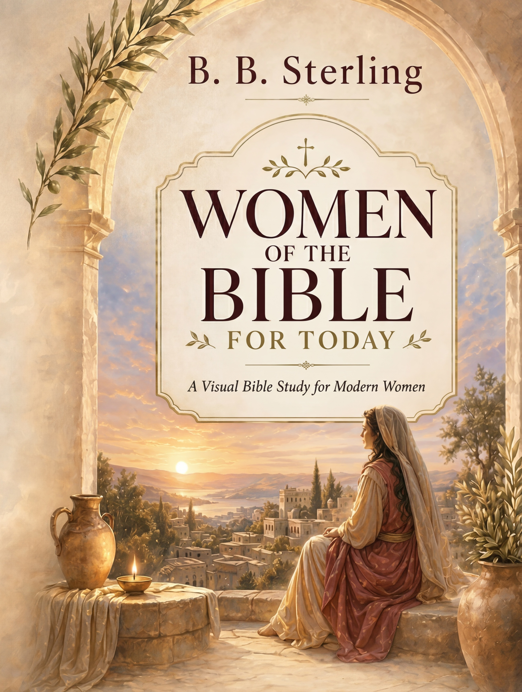

Visual Bible Guide
Visual Bible GuideBest for guided spiritual reading.
FeaturedSPIRITUAL COLLECTION
A conversion-focused layout for readers looking for guidance, prayer, and meaningful gifts.
Visual Bible GuideBest for guided spiritual reading.
Featured
Women of Faith VisualStory-rich devotion and reflection.
Top gift First Communion Companion
First Communion CompanionFamily-friendly spiritual keepsake.
Seasonal Bible Workbook
Bible WorkbookAction-oriented notes and exercises.
Practical